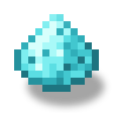

電動クワ
alaindustrial:electric_hoe
概要
電動クワは同ラインの4つ目で最後の手持ち電動ツールです。ドリル（石）、チェーンソー（木）、ショベル（土）に続いて、農地を担当します。契約は同じで、耐久値の代わりに EU/FE で動作し、壊れず、放電時は素手速度でフルドロップとともに動作し続けます。
クワは2つのことを行い、どちらも1回あたり 50 EU/FE を消費します。
耕起。 土、草、土の道を右クリックすると農地になります。炭素土は土に、根付いた土は垂れ根付きの土になります。 ブロックの破壊。 クワは #minecraft:mineable/hoe を速度 9.0（ダイヤモンドは 8.0）で破壊します。対象は干し草、葉、スポンジ、苔、ネザーウォートブロック、乾燥昆布などです。
満充電時のバッファは 10 000 EU/FE で、1回の充電あたり約 200 回 の使用が可能です。
放電したクワは2つの役割で異なる挙動を示します。これは意図的なものです。
破壊は継続します。素手速度（1.0）で、採掘レベルとドロップはすべて維持されます。 耕起はできません。農地の代わりに、ホットバー上の行に赤い「耕起するための充電が不足しています」と表示されます。
電動ドリルの松明と同じ仕組みで、放電時は採掘が低下し、右クリックのアクションには充電が必要です。耕起はクワの本質であり、無料であればゲーム全体で1 EU/FE も消費しないことになります。
他の EU/FE アイテムと同様に、クワは耐久値がなく壊れることはありません。アイコン下のバーは摩耗ではなく EU/FE の充電量（黄色、LV 色）を示します。
エネルギー
エネルギーネットワークから独立した専用の EU/FE バッファを持ちます。エネルギー貯蔵庫のスロットと装備したパックで充電され、耕起とブロックの破壊によって充電を消費します。
| 項目 | 値 |
|---|---|
| 役割 | EU/FE バッファを持つ手持ちツール：充電器にとっての消費者 |
| バッファ | 10 000 EU/FE |
| 充電 | エネルギー貯蔵庫のスロット / 装備したパック、≤ 32 EU/FE/ティック（LV の上限による制約）→ 満充電まで約16秒 |
| 消費 | 正常に破壊したブロックごとに 50 EU/FE および正常な耕起ごとに 50 EU/FE |
| パッシブ放電 | なし |
| コンポーネント | （Long、persistent + networkSynchronized）——本MODの全電力アイテムが共有するコンポーネント |
消費はサーバー側でのみ、かつ硬度が非ゼロのブロックに対してのみ差し引かれます。クリエイティブモードでは充電を消費しません（）。
インベントリ
該当なし——クワは内部のアイテム収納を持ちません（スタック1）。
ブロックの性質
該当なし（アイテム）。
レシピ
クラフト：他の3つと同じ枠組みですが、中央はダイヤモンドのクワです。上段に鉄インゴットの列、両脇にバッテリーを2つ、下段に銅コイルを2つと電子回路を配置します。バッテリーが持つ充電は完成品のクワに引き継がれます。プレイヤーが銅コイル、電子回路、またはダイヤモンドのクワを入手するとレシピ帳で解放されます。
修理——該当なし：耐久値がないため修理するものがなく、「修理」は EU/FE の充電を指します。
挙動
耕起およびその他の右クリック変換——50 EU/FE がかかります。 土、草、土の道 → 農地、炭素土 → 土、根付いた土 → 土 + 垂れ根、バニラのクワと全く同じです。充電は変換が実際に発生したときのみ差し引かれます。石の壁やすでに耕された農地をクリックしてもバッファは変更されません。充電が不足するとクワは耕やさず、ドリルの松明と同様にホットバー上で通知します。ただし通知するのは耕せるブロックを右クリックしたときだけです。放電したクワで石やチェストなどを右クリックしても、メッセージも横取りもなくそのまま通過するため、オフハンドのアイテムは正常に機能します（）。 ブロックの破壊： 充電が ≥ 50 EU/FE の間、クワは #minecraft:mineable/hoe を速度 9.0（ダイヤモンドは 8.0）で破壊します。このようなブロックごとに 50 EU/FE が差し引かれます。 放電したクワ： 充電が 50 EU/FE 未満では素手速度（1.0）で破壊しますが、採掘レベルとドロップは維持され、EU/FE は消費されません。このとき効率強化のエンチャントは機能しません（バニラのしきい値 speed > 1.0）。放電したクワでは耕やせません。上記を参照してください。 充電： エネルギー貯蔵庫の充電スロットと装備したエネルギーパックは自動的にクワを受け付け、最大 32 EU/FE/ティックまで充電します。 攻撃： バニラのクワと同様に武器ではなく（ダメージ 1、攻撃速度 4）。打撃はEU/FE を消費せず、クワを摩耗させません。 エンチャント： クワは #minecraft:hoes に属するため、エンチャントテーブルと金床はクワとして扱います。耐久・修繕は壊れないクワでは無意味ですが、無害です。 収穫——対応していません。 これは大鎌の役割であり、そのために作られています。クワに重複させることはしませんでした。 表示： アイコン下のバーが充電量を示します（黄色、LV 色）。ツールチップには「充電量：X / 10 000 EU/FE」、ゼロでは赤色の「放電済み」と表示されます。テクスチャはゼロ充電で「消灯」状態に切り替わります。 ドロップ／死亡／再ログイン： 充電量はアイテムに保存され、保持されます。 クリエイティブ： 充電を消費しません。
ダイヤモンドチップ（アップグレード）
ダイヤモンドチップ電動クワ（、）はクワの第2段階であり、 ダイヤモンドチップ電動ドリルとダイヤモンドチップ電動チェーンソー に続くシリーズ3つ目のアップグレードです。基本のクワとの違いはちょうど2点で、それ以外はすべてそのまま 継承されます。
1. 採掘が速い。 速度は基本のクワの 9.0 に対して 10.5 — ドリル（8.5 -> 10.0）とチェーンソー （9.0 -> 10.5）が取ったのと同じ +1.5 の刻みです。採掘レベルは変わりません。アップグレードは作業を 速くするだけで、新しいブロックを解禁するものではありません。
2. 耕した畑が最初から湿っている。 通常の耕作は — バニラのクワでも基本の電動クワでも — 乾いた 農地を作ります。新しい農地ブロックの水分量はゼロです。その後のバニラの挙動は次のとおりです。
水平方向 ±4 ブロックの範囲内に水があるか、雨が降っていれば、水分量は自動的に最大まで戻ります。 水がなければ、水分量はランダムティックごとに 1 ずつ減り、ゼロになった時点で上に作物がなければ、 ブロックは土に戻ります。
アップグレードの価値はここにあります。バニラでは、水から離れた場所を耕してすぐに植えないのはほぼ無意味で、 畑は乾いて土へ崩れてしまいます。ダイヤモンドチップのクワは新しい畑に最初から満水分を与えるため、成長の 高速化（バニラは湿った土のほうが作物が速く育ちます）と、畑が土に戻り始めるまでのランダムティック7回分の 余裕の両方が手に入ります。
これはスプリンクラーではなく、出だしの優位です。水分量はその後バニラ通りの間隔で減っていきます。 アップグレードがそれを補充することはなく、畑のそばの水を代替するものでもありません。既存の農地に水を 与えることもありません — 効果は自分自身が農地に変えたブロックにのみ、しかも耕作の電力が実際に消費された 場合にのみ発動します。充電切れのクワでは何も潤せません。
なお、粗い土と根付いた土を耕すと農地ではなく普通の土になります（これはバニラ自身の仕様です）ので、 そこには効果が及びません — 潤す対象がありません。
なぜドリルやチェーンソーのようなシルクタッチではないのか。 それらのアップグレードの2つ目の機構は 切り替え式のシルクタッチですが、クワにとっては空振りになります。クワの担当ブロック （#minecraft:mineable/hoe — 干草、葉、スポンジ、苔、ネザーウォートブロック、乾燥した昆布）は、 エンチャントなしでもすべてそのままドロップするからです。増やすものも、抑えるものもありません。そのため 本アップグレードは、クワだけが持つ「耕作」を強化します。
変更なく継承されるもの： 10 000 EU/FE のバッファ、ブロックあたり 50 EU/FE と耕作1回あたり 50 EU/FE、32 EU/FE/tick の受け入れ、同じ充電場所、耐久値がないこと、バッファが空のときは素手の速度で動作すること、クリエイティブでの 挙動、バニラのクワと同じ攻撃性能（武器ではありません）。このアップグレード専用の設定キーはありません。
クラフト： — 中央に基本の電動クワ、上段に ダイヤモンドダスト3個（これが「チップ」そのもの）、両脇に 白銅インゴット2個、下にラピスラズリダスト。 素材はドリル（インバー、銀の歯車）ともチェーンソー（青銅、金の歯車）とも意図的に変えてあり、3つの アップグレード系統が同じ資源を奪い合わないようにしています。レシピに歯車がないのも意図的です。クワには 回転部品がなく、伝えるべき動力がないためで、下段には代わりに「水」の役割としてラピスラズリダストを 置いています。
アップグレードしても充電は残ります。 このレシピは 型を使うため、投入した基本の電動クワの EU/FE は燃えずに成果物へ移ります。ドリルとチェーンソーのレシピも 同じ仕組みです。
レシピは手で並べる必要があります。 レシピブックの自動入力ボタンは充電済みのクワを拾いません。 バニラのインベントリ内の材料検索はアイテムのコンポーネントを比較しますが、充電済みのクワには pouch_energy があり、見本側にはないためです。これはバニラ側の制限で、3つのアップグレードに共通です — 詳細はタスク を参照してください。
進行
同ラインの4つ目で最後の電動ツールです。ドリル——石、チェーンソー——木、ショベル——土、クワ——農地。 エネルギー貯蔵庫とバッテリーの後に利用可能です。LV インフラなしにはクラフトも充電もできません。 LV 等級。残りの電動アイテム（サーベル／ナノボウ／ヴァジュラ）は今後の課題です。
関連項目
電動ドリル——ラインの石担当で、ブロックごとの消費も同じ。 電動チェーンソー——ラインの木担当。 電動ショベル——土担当。右クリック委譲の仕掛けは同じですが、そちらは無料、クワは有料です。 大鎌——収穫用のツールで、クワは代わりになりません。 エネルギー貯蔵庫——クワの充電源（charge スロット）。
クラフト
定型クラフト
▶
電動クワ
用途
定型クラフト

▶
ダイヤモンドチップ電動クワ